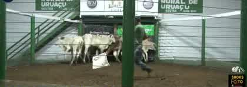

Teste do Pro terminou em 08/11 exemplo
Seu teste de 7 dias acabou, Gabriel.
Seu teste de 7 dias acabou, Gabriel.
Como você quer continuar?
Nada foi apagado. Sua fazenda, seus filtros e seus lotes salvos ficam guardados. Para voltar ao Pro é um toque.
📍 Barro Alto/GO · 250 km🐂 Fêmeas 6–8@ · 100% brancas★ 2 lotes salvos💰 custos preenchidos
🔴 Você perdeu esta semana

Quarta 04/11, por volta das 21h46, entrou em Uruaçu um lote de 7 novilhas brancas de 14 meses a R$ 325/@, 26% abaixo da Scot. Os assinantes receberam o alerta na hora.
WM Leilões, Uruaçu · lance R$ 2.490/cab · ~230 kg (estimado pela era) · vídeo no minuto 1:43:20 · horário estimado pelo início da live (20:02)
Radar Grátis
R$ 0
para sempre
- Resumo de segunda: 3 cidades e R$/@
- Painel com 7 dias de atraso
- 1 alerta ao vivo por mês
- Nome do leilão e link do lote
- Filtro de peso e cor
- Margem
Semanal
R$ 79/mês
ou R$ 790/ano
- Resumo de segunda completo
- Ranking com nome do leilão
- Link do lote no vídeo
- Alerta entrando agora
O que você usou
Pro
R$ 149/mês
ou R$ 1.490/ano (2 meses grátis)
- Painel ao vivo, filtro de peso e cor
- Alerta "entrando agora", sem limite
- Margem com os seus custos
- Tudo do Semanal
Fazenda+
R$ 399/mês
várias fazendas
- 3 fazendas e 5 pessoas
- Freteiros da rota
- Atendimento direto
- Tudo do Pro
💳 Cartão todo mês ou Pix anual (2 meses grátis), pelo Mercado Pago. Cancela quando quiser, sem ligação.🎁 Ou indique 1 fazendeiro que assine e ganhe 1 mês de Pro.
| O que muda | Radar Grátis | Pro |
|---|---|---|
| Resumo de segunda no WhatsApp | 3 primeiras cidades e R$/@ | Completo, com leilão, lote e margem |
| Painel de leilões | 7 dias de atraso, só consulta | Ao vivo, atualizado a cada leilão |
| Filtro de peso e cor | 🔒 | ✓ |
| Lote por lote, com foto e vídeo no minuto | 🔒 | ✓ |
| Alerta "entrando agora" | 1 por mês | Sem limite |
| Margem com os seus custos | 🔒 | ✓ |
| Sua fazenda, filtros e salvos | Guardados | Guardados |